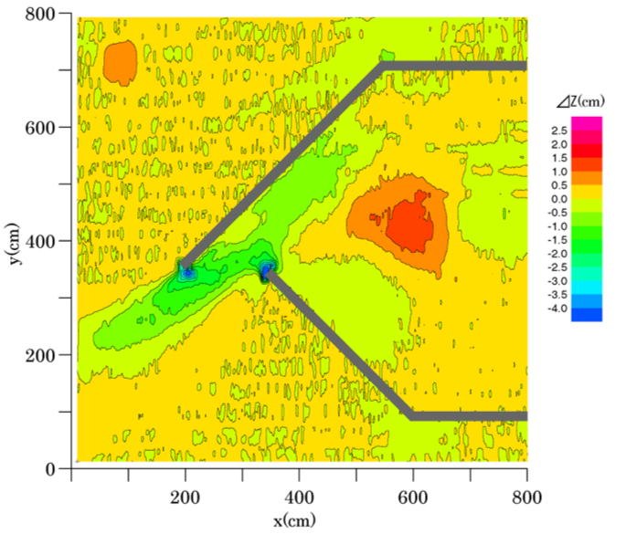
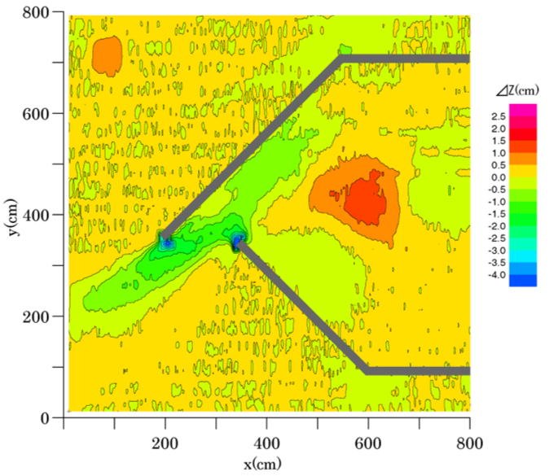

課題６ 津波による港湾内の地形・浮遊砂濃度変化
※本課題はキャンセルとなりました．
概要
津波による港湾内の流況・地形変化に関する水理実験の再現計算を実施し，浮遊砂濃度の時系列の再現性を検証する．
内容
課題の背景と目的
津波による土砂移動・地形変化を定量的に把握・予測することは，港湾施設の安全性や対策を検討する際に必須である．さらに，港湾内における海底地形変化の予測モデルを構築する上でも重要である．
本課題では，大型平面水槽を用いた港湾内の津波による流況と地形変化に関する水理実験を対象に，使用する解析モデルの再現性を検証するとともに，港湾における流況・地形変化・浮遊砂濃度特性について議論する．
実験条件（図-1を参照）
- 縮尺1/100の港湾模型を平面水槽内に設置し，沖から港湾に向かって造波した．
- 港湾付近（図-2の右側の四角領域に砂（中央粒径0.08mm）を敷き詰めた条件（以下，移動床実験）と砂を敷き詰めていない条件（以下，固定床実験）の2種類を設定した．
- 沖合（図-2の水位・流速計測位置）で水位・流速の時系列を計測した．固定床実験での計測データを図-3，移動床実験での計測データを図-4に示す．
- 固定床実験では，港湾内で水位と流速を計測した．計測位置を図-5，計測データを図-6に示す．
- 移動床実験では，レーザー変位計を用いて，港湾付近の地形変化を計測した（港口部付近は0.05m間隔，それ以外は0.1m間隔）．計測データを図-7に示す．
- 移動床実験では，濁度計を用いて，港湾内の浮遊砂濃度の計測した（計測位置は図-8の赤丸）．※ハッカソンまでは非公開
比較方法
- 固定床実験で計測された水位・流速の時系列データ（図-6）と計算結果を事前に比較し，流況の再現性を確認する．
- 移動床実験で計測された地形変化データ（図-8の白丸，0.5m×0.5m間隔の15地点×15地点）と計算結果を事前に比較し，津波による砂移動の再現性を確認する．地形変化はハッカソンにおいても比較するため，計算結果を提出する．
- 図-8の赤丸の位置（C2，C5）での浮遊砂濃度の時系列をハッカソンにおいて比較するため，計算結果（３次元計算の場合は，鉛直分布も含める）を提出する．
事前公開データ（使用申込はこちら）
※本課題はキャンセルとなりました．
- 固定床実験で計測された沖合の水位・流速の時系列データ（図-3）
- 移動床実験で計測された沖合の水位の時系列データ（図-4）
- 固定床実験で計測された港湾内の水位・流速の時系列データ（図-6）
- 移動床実験で計測された港湾付近の地形変化データ（図-7）
お問い合わせ
課題に関する質問などはこちら．
計算チームの参加申込はこちら．
※本課題はキャンセルとなりました．
図面
図-1 実験条件
図-2 沖合計測位置および港湾周辺
図-3 沖合の水位・流速の時系列データ（固定床実験）
図-4 沖合の水位の時系列データ（移動床実験）
図-5 水位・流速の計測位置（固定床実験）
図-6 港湾内の水位・流速の時系列データ（固定床実験）
 

図-7 港湾付近の地形変化データ（移動床実験）
図-8 地形変化および浮遊砂濃度の比較位置（移動床実験）